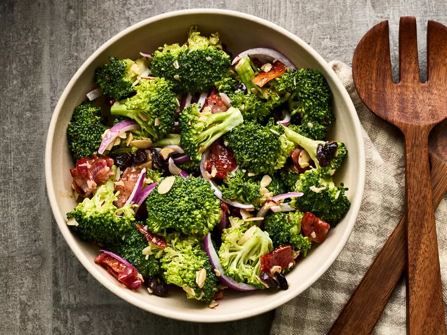

Broccoli Salad

Description:
This homemade broccoli salad uses a tasty combination of fresh broccoli, cranberries, nuts, and bacon tossed in a rich and creamy dressing. You might want to double this recipe for a party or potluck — it goes quick!
Ingredients:
- ½ pound bacon
- 2 heads fresh broccoli, cut into bite-sized pieces
- 1 small red onion, sliced into bite-sized pieces
- ¾ cup raisins
- ¾ cup sliced almonds
- 1 cup mayonnaise
- ½ cup white sugar
- 2 tablespoons white wine vinegar
Steps:
- Gather all ingredients.
- Place bacon in a deep skillet and cook over medium-high heat until evenly brown, 7 to 10 minutes; drain, cool, and crumble.
- Combine bacon, broccoli, onion, raisins, and almonds together in a bowl; mix well.
- To prepare the dressing: Mix mayonnaise, sugar, and vinegar together until smooth.
- Stir into the salad.
- Let chill before serving, if desired.